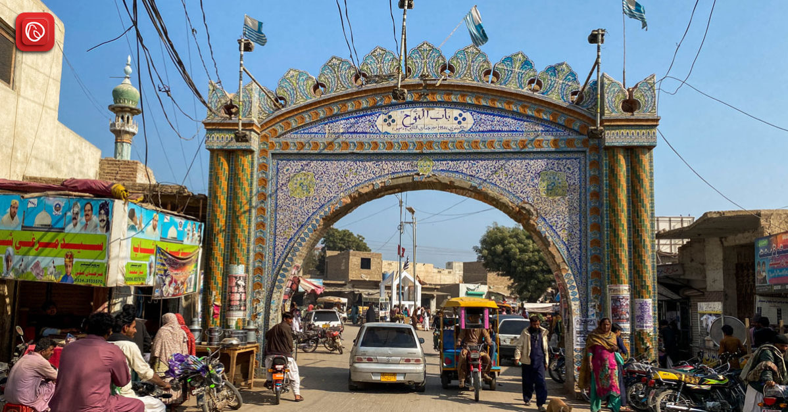

<div class="portfolio-single-load clearfix">
    <div class="custom-full-width-box">
        <div class="custom-container">
            <div class="custom-row align-items-center">
                <div class="custom-image-column">
                    
                </div>
                <div class="custom-text-column">
                    <h2 class="custom-heading">Hala City</h2>
                    <p class="custom-paragraph">
                        Hala is located in the Matiari district of Sindh. It is famous through the subcontinent for art, glazed colored pottery (Kaashi), woodwork (Jandi), cloth printing, woven cloth (Sussi), and khaddar made of handmade khadi. Hala is also the resting place of the great Sufi poet and legend Shah Abdul Latif Bhitai.

                    </p>
                </div>
            </div>
        </div>
    </div><!-- .custom-full-width-box end -->

</div><!-- end single-project -->
